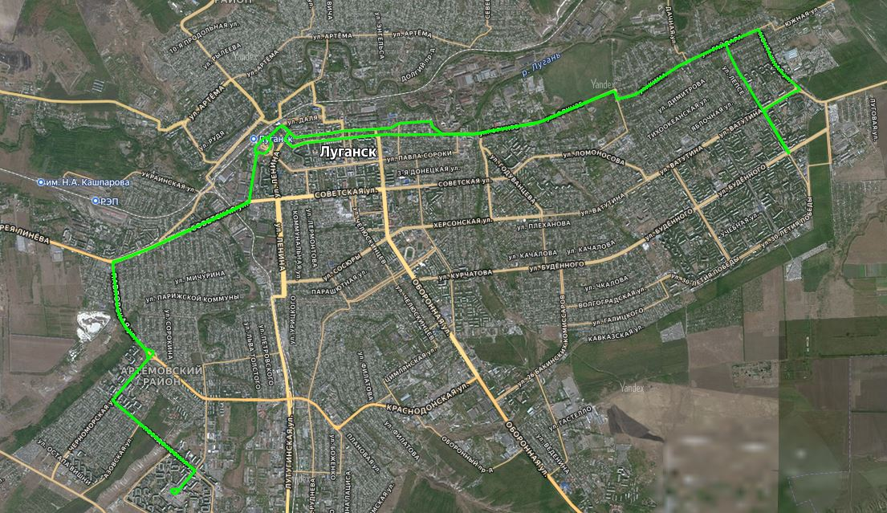

| Тип | автобус (кольцевой) |
|---|---|
| Состояние | Действующий |
| Периодичность | По будням |
| Протяжённость | 36,7 км |
| Время в пути | 104 мин |
| Количество машин | 3 |
| Перевозчик | ООО «АНЕТТА», ООО «ЛАП» |
| Открыт | не позднее 1996 года |
| Стоимость | 40 ₽ |
Маршрут №118 — автобусный маршрут, связывающий "Мирные кварталы" с кварталом Дзержинского через железнодорожный вокзал, старый центр города и посёлок Малая Вергунка. На маршруте работают автобусы моделей БАЗ-2215, БАЗ-22154, Рута 20 ПЕ.
Ранее эксплуатировались Рута СПВ-17, Рута СПВ А048.0, Рута 18, Рута 20, Рута СПВ А048.2, Богдан А201

Схема маршрута №118
Маршрут следования: 2-я Краснознамённая улица – Победоносная улица – Черноморская улица – Улица Нечуя-Левицкого – Павловская улица – Советская улица – Улица Виктора Пятёркина – Улица Сараева – Улица Виктора Пятёркина – Улица Даля – Улица Пушкина – Улица Ленина – Улица Тараса Рыбаса – Улица Тараса Шевченко – Улица Фрунзе – 2-я Беломорская улица – Улица КИМа – Улица Гайдара – Улица Смоленская – Улица Путейская – Улица Монтажная – Улица Гайдара – Улица КИМа – 2-я Беломорская улица – Улица Фрунзе – Улица 21-я Линия – Красноармейская улица – Октябрьская улица – Улица Карла Маркса – Улица Пушкина – Улица Виктора Пятёркина – Советская улица – Павловская улица – Улица Нечуя-Левицкого – Черноморская улица – Победоносная улица – 2-я Краснознамённая улица
График актуален по состоянию на 04.2026.
| № | Конечная | 1 А872АР |
2 А248АС |
3 А614ЕТ |
|---|---|---|---|---|
| 1 | Квартал Мирный | 04-50 | 05-10 | 05-30 |
| Квартал Дзержинского | 05-40 | 06-00 | 06-20 | |
| 2 | Квартал Мирный | 06-30 | 06-50 | 07-10 |
| Квартал Дзержинского | 07-24 | 07-44 | 08-04 | |
| 3 | Квартал Мирный | 08-18 | 08-42 | 08-55 |
| Квартал Дзержинского | 2-я Беломорская ул. 08-56 | 2-я Беломорская ул. 09-20 | 09-59 | |
| 4 | Квартал Мирный | — | — | 13-03 |
| Квартал Дзержинского | — | — | 13-53 | |
| 5 | Квартал Мирный | 14-07 | 14-45 | 15-05 |
| Квартал Дзержинского | 14-57 | 15-35 | 15-55 | |
| 6 | Квартал Мирный | 16-05 | 16-30 | — |
| Квартал Дзержинского | 16-55 | 17-15 | — |
Маршрут следования «Квартал Мирный → Квартал Дзержинского»:
1. Квартал Мирный
2. Квартал Ольховский
3. Квартал Заречный
4. Посёлок Косиора (Победоносная улица)
5. Квартал Героев Сталинграда
6. Квартал Ленинского Комсомола (Райисполком / м-н «Регион»)
7. Улица Стаханова
8. Павловская улица
9. Квартал Гаевого
10. Кооперативный техникум (к-тр «Буревестник»)
11. Улица Чапаева
12. З-д Пархоменко (рынок Пархоменко)
13. Железнодорожный вокзал
14. Улица Пушкина
15. Улица 7-я Линия (улица Тараса Рыбаса)
16. Красная площадь
17. Краеведческий музей
18. ДК Ленина
19. Кольцо завода ОР (СШ №10)
20. Горбольница №2
21. Машколледж (ЛГУ Даля)
22. Рынок «Старый городок»
23. Автосборочный з-д (з-д «Горизонт»)
24. Трамвайное депо (ТТУ)
25. Дачи (по требованию)
26. 2-я Беломорская улица
27. 1-я Горская улица
28. Минская улица
29. СШ №39
30. Вишнёвая улица
31. Смоленская улица
32. М-н «Наглядные пособия» (по требованию)
33. Смоленская улица
🕒 только утром 34. По требованию
🕒 только утром 35. Квартал 50-летия Октября
🕒 только утром 36. По требованию
🕒 только утром 37. Смоленская улица
38. Квартал Дзержинского